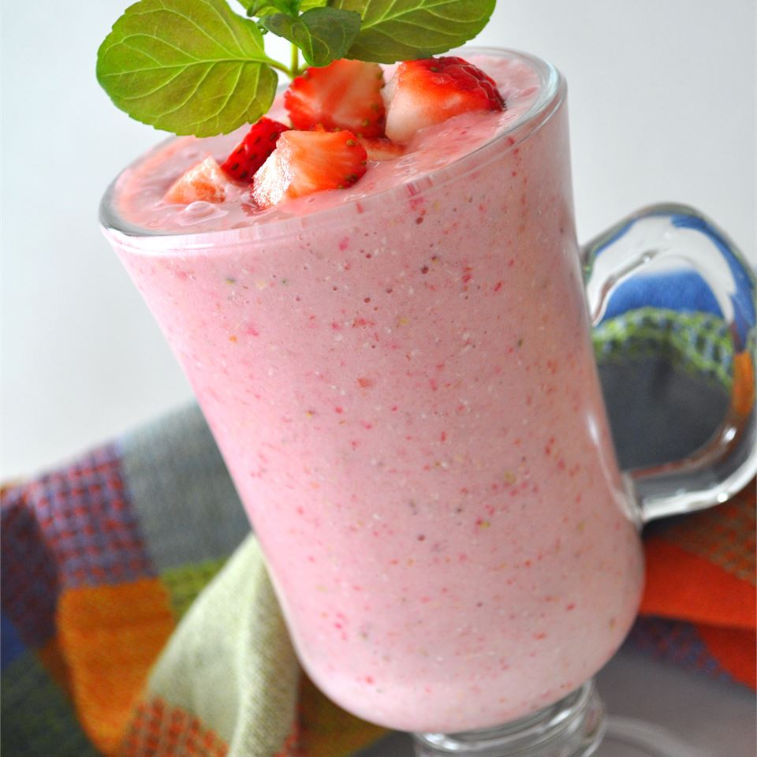

Strawberry Smoothie

Description
A healthy fruit drink made by puréeing strawberries. What you get is a creamy delicous drink that is also very nutritious!
Ingredients
- 1 cup soy milk
- ½ cup rolled oats
- 1 banana, broken into chunks
- 14 frozen strawberries
- ½ teaspoon vanilla extract
- 1 ½ teaspoons white sugar
Steps
- In a blender, combine soy milk, oats, banana and strawberries. Add vanilla and sugar if desired. Blend until smooth. Pour into glasses and serve.
Return to main page